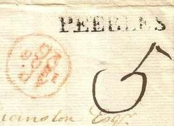
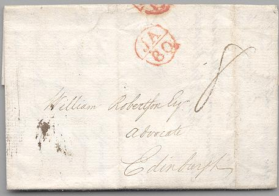
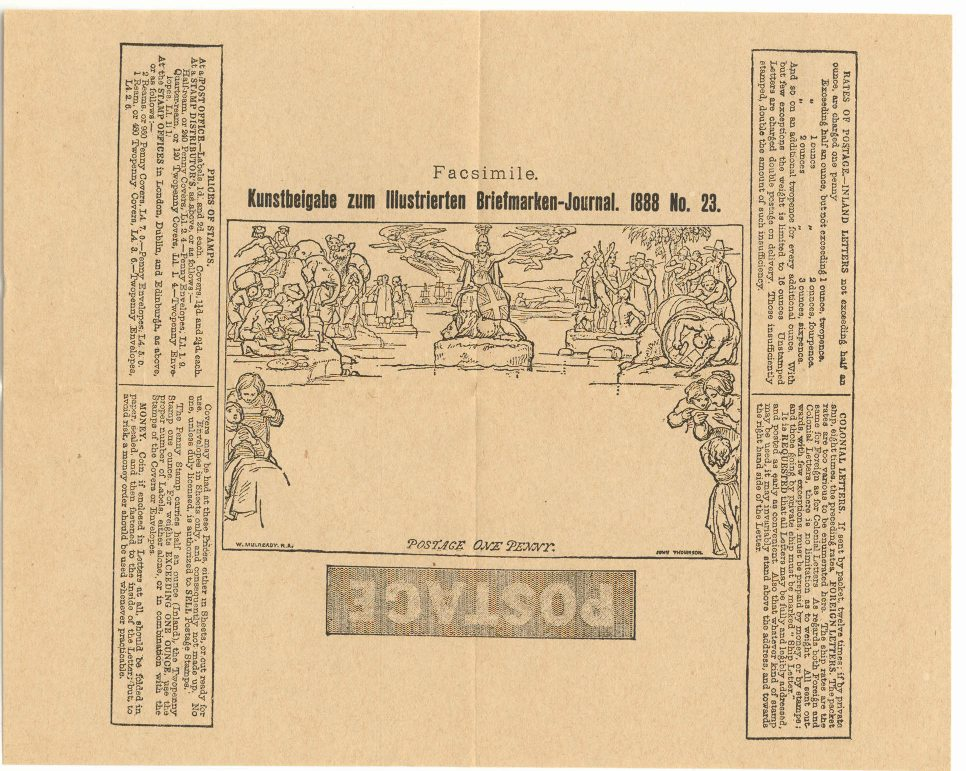
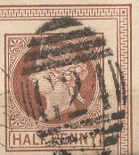
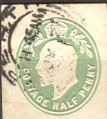
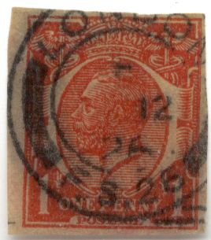

Return To Catalogue - Great Britain
Note: on my website many of the
pictures can not be seen! They are of course present in the
catalogue;
contact me if you want to purchase it.
The first British postmark was introduced in 1661 by the Postmaster General, Henry Bischop in London. Since then these marks are called Bishop-marks. It served to indicate the month and day that a letter had been received by the post office. Many different kinds of Bishop Marks exist, varying in size and lettering, and they remained in general use until 1787/1788. More information can be found on: http://www.geocities.com/leisurewrite/bishop.html. Examples:


(One penny)
(Two Pence)
A facsimile made by Senf (Senf made forgeries of both the 1 p and 2 p Mulready envelopes):

These Senf forgeries are also described in Album Weeds (as third forgery). The text reads: 'Facsimile. Kunstbeigabe zum Illustrierten Briefmarken-Journal 1888 No. 23'. A version without this text but with 'Facsimile Verlag von Gebrüder Senf in Leipzig Facsimile' also exists:
Senf has also made a forgery of the 2 p Mulready envelope (with inscription 'Kunstbeigabe zum Illustrirten Briefmarken-Journal No.1 1886'):
(Senf forgery of the 2 p Mulready envelope distributed in 1886)
(Forgery)
The above Mulready envelope is the first forgery described in Album Weeds adressed to 'Lord Holland Kensington House Carew London.'. It seems to have been photographed from a genuine envelope and sold by T.H. Hinton of London.
I have seen a forgery of the 1 p and 2 p Mulready envelopes, with inscription 'Fac-Simile.' at left and right bottom instead of the names 'W.MULREADY.R.A.' and 'JOHN THOMPSON'.
(Reduced size)
1 p red 1 p red (with date 1855, 2 types) 2 p blue
2 p blue
(Reduced size)
2 p blue (with date) 2 p blue (with small circles instead of date)
(zoom-in)
1 p blue
(Reduced size)
2 1/2 p blue
1/2 p red

2 p blue
(Reduced sizes)
1/2 p green (with date) 1/2 p green (no date, 1877) 1/2 p brown (1879)
1/2 p brown

1/2 p violet 1/2 p brown 1 p 1 f brown
(Reduced size)
1/2 p (HALF PENNY) brown 1/2 p green
1 p brown on yellow 1 p red on blue
1 1/2 p brown on yellow
2 p brown
3 p red
Several private postal stationeries exist, examples:
"BRIGHTON OFFICE OF THE PHILATELIC QUARTERLY" printed
around a 1 p red Victoria head
"W.H.SMITH & SON 186. STRAND. LONDON" 3 p brown and
3 p red in other design, reduced sizes
A cut from South Australia without country name:
(South Australia cut)
Later issues:

I've seen a similar design, but with the king printed instead of
embossed (also 1 p red).
Reduced view. A 1 1/2 p brown and 2 p yellow also exist in this
design.

King George V, 1 p cut. A 1/2 p green exist in the same design.
Also another 1/2 p and 1 p exist, but with the king facing
slighly forwards instead of to the left.
{kind=link}
{kind=link}
{kind=link}